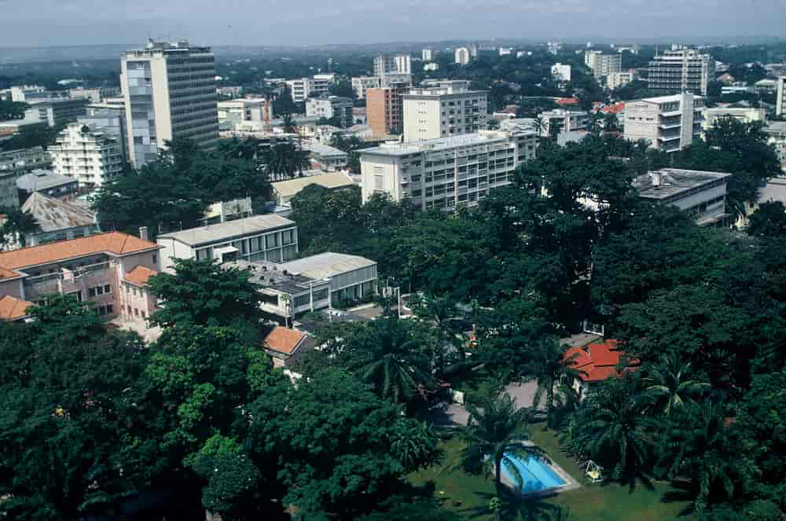

I have seen 3 continents so far and i am being to see more before i kick the bucket
Here i will be only showing you what Africa looks like
Born in Africa, i was lucky to have lived to 2 countries there, RDCongo and South Africa
In DRCongo ,i lived in Kinshasa the capital
This picture is to give to an idea of what it looks like
In South Africa, i lived in Cape Town for 5 years, check the video posted to see how beautiful is this place .
Source: